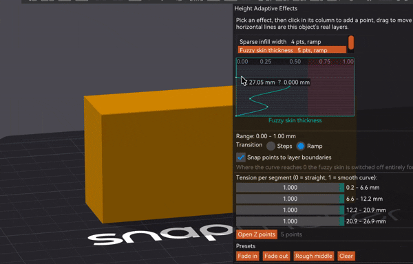

§23 — Structure
Height Adaptive Effects
Pick a setting, draw a curve up the object, and the setting follows the height. The infill cell opens where nothing rests on it and closes under the top surface. Fuzzy skin is born, lives for a band, and dies again. One object, no modifiers, no boolean surgery.
- Libre Mode
- per object, travels in the 3MF
- since 2.4.3
Where Left gizmo toolbar›Height Adaptive Effects
What breaks without it
Orca can already vary settings by height. That is what height range modifiers are. You type a Z into a box, slice, and find out afterwards where the transition actually landed, because the layer boundary near your Z is not at your Z. Change the layer height and every number you typed means something slightly different.
Height range modifiers
Type a Z range, type a value, slice, look. Discrete bands only, and the band edges land where the layers happen to fall.
A curve over the real bands
The graph is drawn on the object's own layer bands. Points snap to real layers, the band you are dragging lights up on the model, and a ramp is allowed.
It is the same idea as the layer height curve next door, pointed at any setting instead of at Z itself. No other slicer has it, and it is the piece of the fork with the widest reach, because it has nothing to do with colour.
The one to try first: the infill cell
Sparse infill exists to hold up the solid surfaces above it. Near a top surface that job is real, and you want thin lines close together. Ten millimetres lower down, nothing rests on that infill at all and thin lines are just slow.
Draw a curve on sparse infill width and the grid opens and closes as you go up. The part below is a real print: a 26.6 mm cube, 0.2 mm layers, 25% crosszag, one curve. The line spacing runs from 1.40 mm under the top surface to 2.47 mm through the middle, so the cell through the middle has a little over three times the area. The density never moves off 25.0% on any of the 135 layers, because density is what fixes the plastic.
The rule underneath all of it
line_spacing = flow spacing / density. Widen the line and the gap widens with
it. Same grams, fewer and fatter struts, a bigger cell. That one line is the whole feature,
and it is also the whole catch.
Which makes it a structural tool as much as a speed one. A cell three times the area built from struts nearly twice as thick is a different lattice at the same weight. Put the open band where you want the part to give and the fine band where you want it stiff and you have a damper, a clip, a bumper, a foot.
Draw a curve and watch it print
Drag the points on the left. The right-hand view is what comes out: three sampled layers of the infill grid, or the wall in elevation with fuzzy skin on it. The numbers under the graph are the ones the panel shows you in the app.
line_spacing = flow spacing / density with
flow spacing = width − layer × (1 − π/4), which is
FillRectilinear.cpp:2792. Line shift per layer is measured on the same
line index in both layers, the way the panel does it. The block is a stack of translucent
slices, and it quantises your curve into bands to draw it, because replicas at a changing
pitch land off each other and turn to moiré; with Staircase on those are your real
bands. The fuzzy wall is a drawing of the displacement, not a port of the noise.
Fuzzy skin that fades in and out
The other one everybody tries first. A curve on fuzzy skin thickness gives you a smooth base, a textured band, and a smooth top, on one object. Grip where a hand goes and a clean surface where a lid seats.
- Thickness reaching 0 switches the fuzzy skin off for that layer rather than flattening it. A zero-amplitude fuzzy would otherwise still resample every perimeter into thousands of points: the same printed wall, a much fatter file.
- The curves scale fuzzy skin, they do not turn it on. If fuzzy skin is off for the object, the panel says so rather than letting you slice and find nothing changed.
- The character controls go further than the depth. Point distance, noise scale, octaves and persistence can each take their own curve, so the texture can get coarser or finer with height as well as deeper.
Building the list, drawing the curve

The panel starts empty. Press Add, pick an effect, and it joins this object's effects, so the panel only ever shows what you actually use no matter how many effects exist. The trash button on a row removes the effector completely, curve and all; Clear at the bottom empties the curve but keeps the effect in the list. Each row carries a small preview of its own curve and its point count, which is what keeps a list of similarly-named effects readable.
Click to add a point, drag to move, right-click to delete. Height runs up the left edge and the effect's value across the top. Hovering anywhere gives a live readout of the Z you are on and what the curve is worth there, so you do not have to grab a point to read a number. Dragging a point highlights the matching band on the object in 3D. Open Z points opens a numeric table, one row per point, with the layer number each Z lands on. Presets seed a shape for the effects that have sensible ones, and Refresh layers re-reads the bands after you change the adaptive layer height profile.
Z is measured from the bottom of the object, not from the bed. If you print with a raft, the raft is not part of this axis.
Steps or ramp, and the number that decides
Steps holds the value constant inside each band and changes it in one jump at a layer boundary, with every point snapping to a real layer. Ramp varies it continuously.
Steps is more than the cautious option, and the reason is worth spelling out because it is easy to get backwards. Sparse infill holds itself up: each line wants to land on the line of the layer below it. The engine works hard to protect that, and pins the layer height it uses to compute the infill spacing to the object's nominal one, precisely so that adaptive layer height on its own cannot walk the lines out of alignment.
What it cannot pin is the width, because that is a setting. Widen the line and the gap widens with it, every line shifts sideways, and the further you are from where the fill starts the more that shift has piled up.
What breaks the stacking is the drift between consecutive layers, which depends on how steep your curve is rather than on it being a curve at all. A slow ramp moves each layer by a fraction of a micron. So instead of forbidding ramps, the panel measures yours:
- Line shift per layer shows how far the infill of one layer lands from the one below, at the far edge of the object, as a percentage of the line width. It turns amber above roughly 25%.
- Staircase turns your ramp into that many layer-aligned bands, keeping the shape while giving the lines back their constant spacing inside each band.
A shortest-band warning also appears in steps mode: under about four layers, the jump costs more than it gives.
The effects
| Effect | What it is for |
|---|---|
| Sparse infill width | Thin lines low down where the infill has to support the solid above it, thick lines deep inside where nothing rests on them. Same density, same material, less time, and a lattice that can be soft in one band and stiff in another. |
| Outer wall width / Inner wall width | Wall thickness following the height. Thicker where the part is gripped or loaded, thinner where it is only skin. |
| Fuzzy skin thickness | Texture that is born and dies with the height. |
| Fuzzy skin point distance / noise scale / octaves / persistence | The texture's character changing with height, not only its depth. |
Only the three line widths that stack are offered. Internal solid infill and top surface were wired up, looked at, and deliberately taken back out: a ramp there varies the width of the very surfaces the eye reads as flat, which is not something a print wants.
The catch
- Libre Mode only. The gizmo does not exist until the master switch is on.
- A curve needs at least two points to mean anything. One point is a constant, which is what a plain per-object override is for.
- A setting driven by a curve is greyed out in the object's settings panel, so the same value is never set from two places at once.
- Every edit is a re-slice, and on a big model that adds up while you are tuning.
- Density is not on the list. The width moves and the density holds, which is what keeps the grams constant. If you want a genuine density change with height, that is still a height range modifier.
- A steep infill width ramp walks the lines off their support. Watch the line shift readout, and reach for Staircase rather than for a flatter curve.